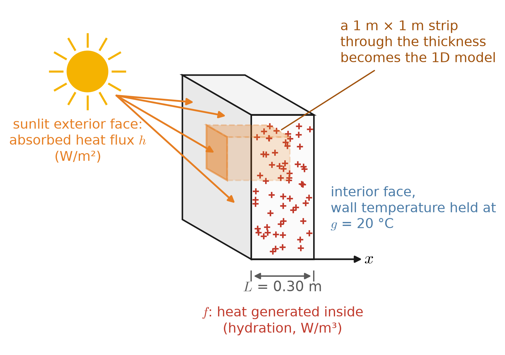
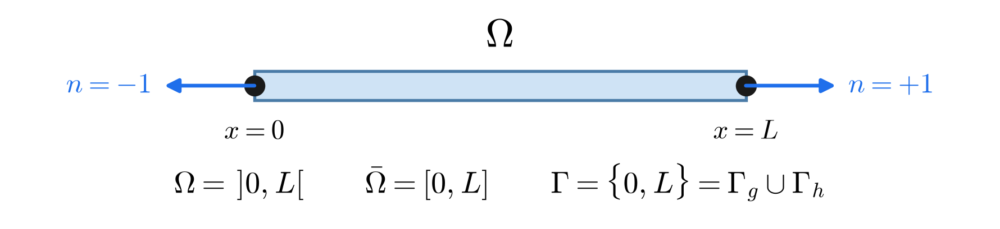
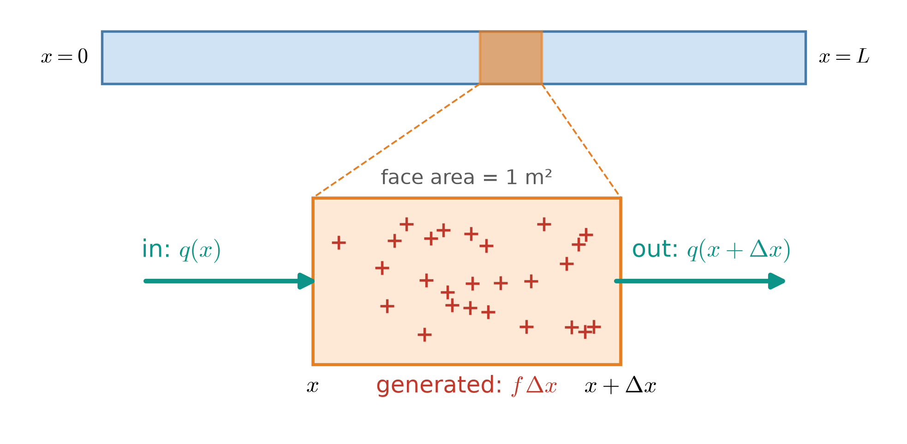
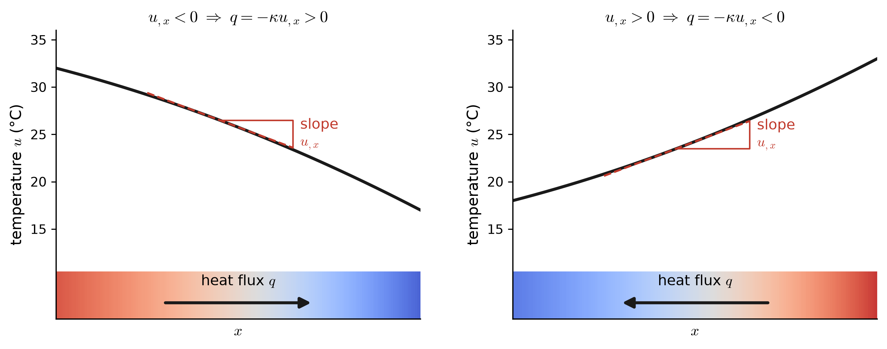
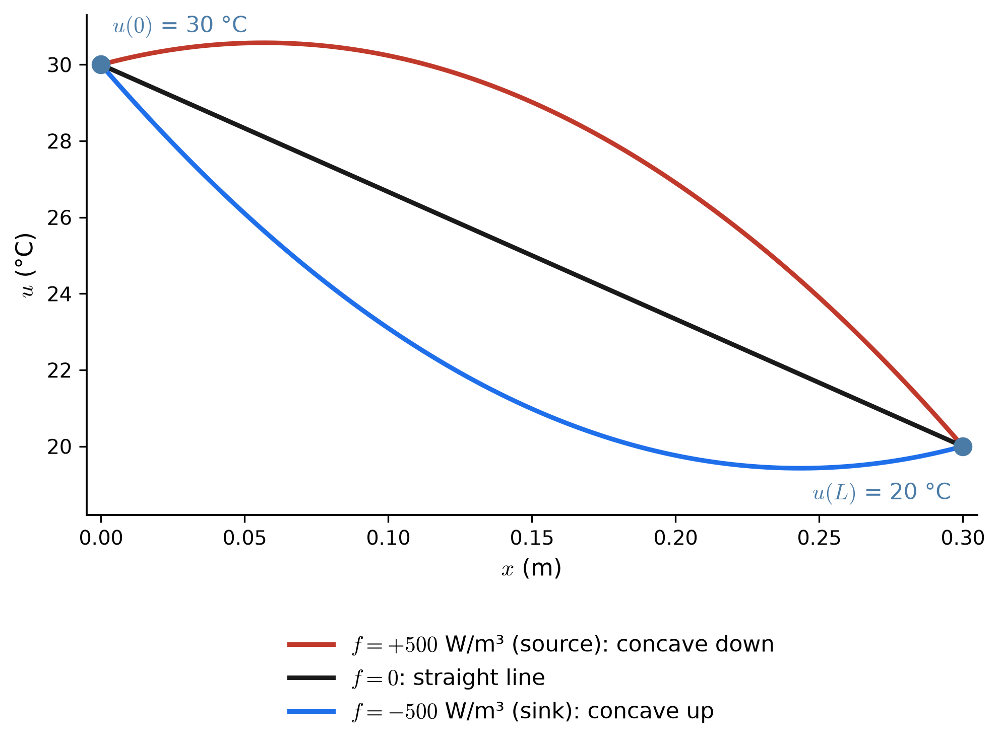
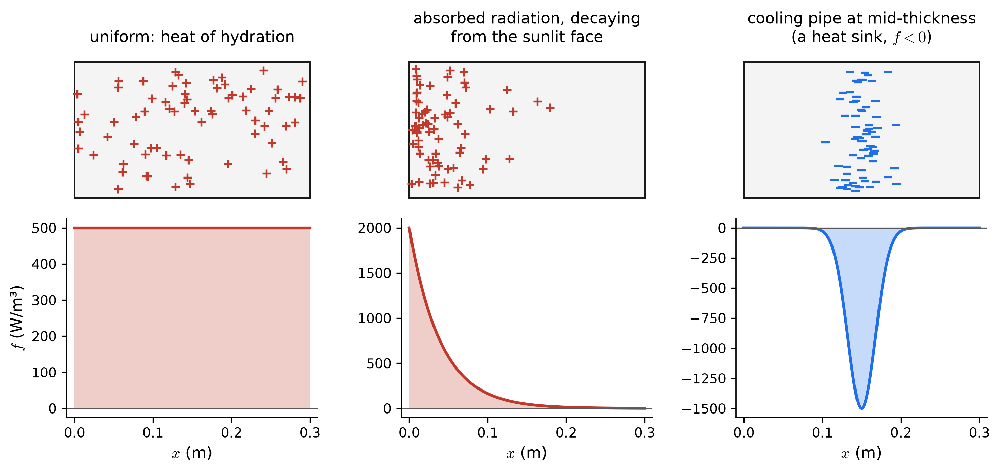
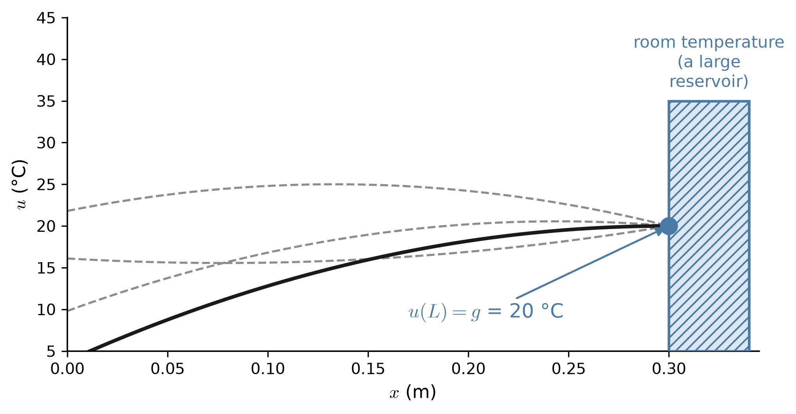
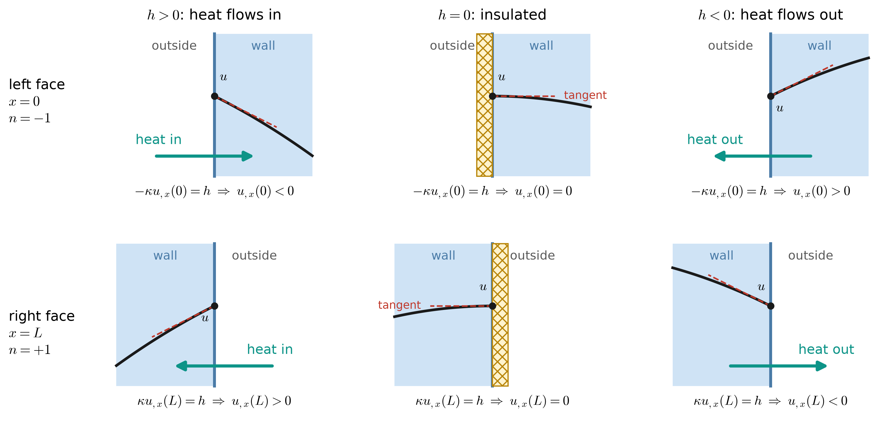
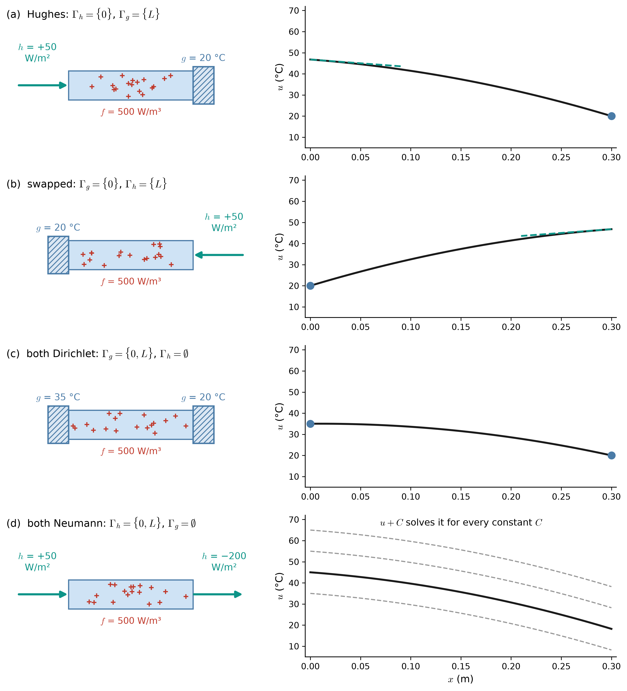
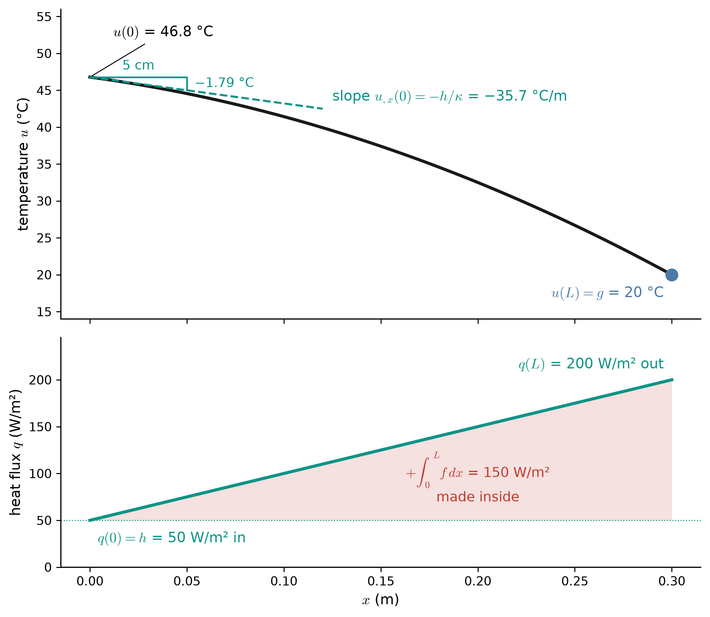

viewof hBC = Inputs.radio(new Map([
["(a) Hughes: h at x = 0, g at x = L", "a"],
["(b) swapped: g at x = 0, h at x = L", "b"],
["(c) g at both faces", "c"]
]), {value: "a", label: "Boundary conditions"})
viewof hF = Inputs.range([-2000, 2000], {value: 500, step: 50, label: "f (W/m³)"})
viewof hH = Inputs.range([-300, 300], {value: 50, step: 5, label: "h (W/m², into wall)"})
viewof hG = Inputs.range([0, 40], {value: 20, step: 1, label: "g (°C)"})
viewof hG0 = Inputs.range([0, 40], {value: 35, step: 1, label: "g at x = 0 in (c) (°C)"})
viewof hK = Inputs.range([0.2, 5], {value: 1.4, step: 0.1, label: "κ (W/(m·K))"})Appendix B — 1D Poisson I: Heat Conduction Through a Wall
This page and its companion, 1D Poisson III: An Axially Loaded Rod, read the same model problem — the one-dimensional Poisson equation of Hughes, The Finite Element Method, Chapter 1 — in two different physical settings. The mathematics is identical on both pages. The physics is not, and it is the physics that tells you what \(f\), \(g\), and \(h\) are, what units they carry, and which way they point.
Hughes states the model problem with every constant set to one:
\[ (\mathrm{S}) \qquad \begin{aligned} &\text{Given } f : \bar\Omega \to \RR \text{ and constants } g \text{ and } h, \text{ find } u : \bar\Omega \to \RR \text{ such that} \\[2pt] &\qquad u_{,xx} + f = 0 \quad \text{on } \Omega = \,]0,1[ \\ &\qquad u(1) = g \\ &\qquad -u_{,x}(0) = h \end{aligned} \]
Choosing a length of one and a material constant of one hides two things that the pictures below need, so we put them back: the domain becomes \(\Omega = \,]0, L[\), and a material constant \(K\) appears inside the derivative, as in Class 4:
\[ -\left(K u_{,x}\right)_{,x} = f \quad \text{in } \Omega \qquad\qquad u = g \quad \text{on } \Gamma_g \qquad\qquad \left(K u_{,x}\right) n = h \quad \text{on } \Gamma_h \]
On this page \(u\) is a temperature and \(K = \kappa\) is the thermal conductivity. Everything below is in SI units.
B.1 The physical problem

The wall is long and tall compared with its thickness. Far from its edges, nothing changes as you move along the wall or up it — temperature varies only through the thickness, in \(x\). So cut out a strip with a \(1\,\text{m} \times 1\,\text{m}\) face and follow the temperature along it. Every quantity on this page is per square meter of wall face, which is why fluxes are in W/m² and not W.
Three things act on the strip, and each becomes one piece of the strong form:
| What happens physically | Where | Becomes |
|---|---|---|
| Heat is generated inside the concrete as it cures | throughout \(\Omega\) | the forcing \(f\) |
| The interior face is held at the room’s temperature | \(x = L\) | a Dirichlet condition \(u = g\) |
| The sun pushes a known heat flux into the exterior face | \(x = 0\) | a Neumann condition \((\kappa u_{,x})\,n = h\) |
B.2 The one-dimensional domain

- \(\Omega = \,]0, L[\) is the open interval — the inside of the wall, faces excluded. Hughes writes open intervals with outward-facing brackets.
- \(\bar\Omega = [0, L]\) is its closure — the wall including its two faces. The solution \(u\) is defined on \(\bar\Omega\), since we need its value at the faces.
- \(\Gamma = \{0, L\}\) is the boundary: in one dimension, just two points.
- The outward unit normal \(n\) points out of \(\Omega\): \(n = -1\) at \(x = 0\) and \(n = +1\) at \(x = L\). It is only a sign in 1D, but that sign is what decides whether a Neumann condition reads \(-\kappa u_{,x}(0) = h\) or \(+\kappa u_{,x}(L) = h\).
- Each point of \(\Gamma\) gets exactly one boundary condition: \(\Gamma = \Gamma_g \cup \Gamma_h\) and \(\Gamma_g \cap \Gamma_h = \emptyset\).
B.3 The quantities and their units
| Symbol | Meaning | SI units | This example |
|---|---|---|---|
| \(x\) | position through the thickness | m | \(0 \le x \le L\) |
| \(L\) | wall thickness | m | 0.30 m |
| \(u(x)\) | temperature (often written \(T\)) | °C (or K) | unknown |
| \(u_{,x}\) | temperature gradient | °C/m | unknown |
| \(\kappa\) | thermal conductivity (\(K\) in class) | W/(m·K) | 1.4 W/(m·K), concrete |
| \(q(x)\) | heat flux in the \(+x\) direction | W/m² | unknown |
| \(f(x)\) | heat generated per unit volume | W/m³ | 500 W/m³ |
| \(g\) | prescribed face temperature | °C | 20 °C |
| \(h\) | prescribed heat flux into the wall | W/m² | 50 W/m² |
Temperature differences are the same in °C and K, so \(\kappa\) can be read as W/(m·°C) with no conversion.
B.4 Where the differential equation comes from
B.4.1 Conservation of energy on a thin slice

Let \(q(x)\) be the heat flux — watts crossing each square meter of a plane at \(x\), counted positive when heat moves toward \(+x\). At steady state the slice’s temperature is not changing, so every watt that enters or is made inside it must leave:
\[ \underbrace{q(x)\cdot 1}_{\text{in}} + \underbrace{f\,\Delta x \cdot 1}_{\text{generated}} - \underbrace{q(x+\Delta x)\cdot 1}_{\text{out}} = 0 \qquad\xrightarrow[\;\text{divide by } \Delta x,\; \Delta x \to 0\;]{}\qquad -q_{,x} + f = 0 \]
Each term is in watts: W/m² × 1 m² for the fluxes, and W/m³ × (Δx · 1 m²) for the generation. Read the result as “the flux grows exactly as fast as heat is being made”: \(q_{,x} = f\).
B.4.2 Fourier’s law: heat flows downhill
The balance has one equation and two unknowns, \(q\) and \(u\). The material supplies the second relation. Fourier’s law says heat flows from hot to cold, at a rate proportional to how steeply the temperature falls:
\[ q = -\kappa\, u_{,x} \]

Substituting Fourier’s law into the balance gives the differential equation of the strong form, in all three of the notations you will meet:
\[ -\left(\kappa\,u_{,x}\right)_{,x} = f \quad\Longleftrightarrow\quad \left(\kappa\,u_{,x}\right)_{,x} + f = 0 \quad\xrightarrow{\;\kappa \text{ constant}\;}\quad \kappa\, u_{,xx} + f = 0 \quad\xrightarrow{\;\kappa = 1\;}\quad u_{,xx} + f = 0 \;\;\text{(Hughes)} \]
B.4.3 What the equation says about the shape of \(u\)
With \(\kappa\) constant, \(u_{,xx} = -f/\kappa\): the forcing sets the curvature of the temperature profile, point by point.

- \(f = 0\): \(u_{,xx} = 0\), so the profile is a straight line and the flux \(q = -\kappa u_{,x}\) is the same everywhere — what goes in one face comes out the other.
- \(f > 0\): \(u_{,xx} < 0\), a hump. The wall is hotter inside than a straight line would predict, because the heat made inside has to flow out through the faces.
- \(f < 0\): \(u_{,xx} > 0\), a dip — heat is being removed inside the wall.
B.5 The forcing function \(f\)
\(f(x)\) is heat generated per unit volume, in W/m³. It is the only term in the strong form that acts in the interior of \(\Omega\); \(g\) and \(h\) act only at the faces. Integrated through the thickness, it gives the heat made behind each square meter of wall, in W/m²:
\[ \int_0^L f\,dx \quad \left[\tfrac{\text{W}}{\text{m}^3}\cdot\text{m} = \tfrac{\text{W}}{\text{m}^2}\right] \qquad\text{e.g.}\qquad 500 \times 0.30 = 150\ \text{W/m}^2 \]

- Heat of hydration — cement releases heat as it cures, nearly uniformly through a freshly cast wall. This is the \(f\) used in the example on this page.
- Absorbed radiation — sunlight that penetrates a (semi-)transparent layer is absorbed over a short depth \(\delta\), so \(f = f_0 e^{-x/\delta}\) is concentrated near the sunlit face.
- Embedded heating or cooling — electric heating cables in the slab give \(f > 0\) where they run; a chilled-water pipe removes heat, \(f < 0\).
- \(f = 0\) is the everyday case of an ordinary, inert wall.
B.6 Boundary conditions
Each face gets exactly one condition: either its temperature is known, or the heat flux through it is known. Never both — and, as we will see, never neither.
B.6.1 Dirichlet: \(u = g\) on \(\Gamma_g\) — the temperature is known

- \(g\) is a temperature, in °C.
- Physically: the face touches something so large, or so well mixed, that the wall cannot change its temperature — and for the moment can be thought of as room air under a thermostat, an ice bath at 0 °C, flowing water, deep ground.
- It is called an essential boundary condition: it is imposed directly on the unknown \(u\). Later, in the weak form, it is built into the trial space \(\mathcal{S}\) rather than appearing in any integral.
B.6.2 Neumann: \((\kappa u_{,x})\,n = h\) on \(\Gamma_h\) — the heat flux is known
Here is the one relation that looks mysterious until you draw it. Start from Fourier’s law: \(q\) is the flux toward \(+x\), so \(q\,n\) is the flux leaving through a face (outward normal), and \(-q\,n\) is the flux entering through it. The Neumann condition fixes the flux entering:
\[ h = -q\,n = -\left(-\kappa u_{,x}\right) n = \left(\kappa\,u_{,x}\right) n \]
So \((\kappa u_{,x})\,n = h\) is not a new law; it is Fourier’s law evaluated at a face, with \(h\) read as heat flux into the wall, in W/m². Now substitute the two possible normals:
\[ \text{at } x = 0 \;(n = -1): \quad -\kappa\,u_{,x}(0) = h \qquad\qquad \text{at } x = L \;(n = +1): \quad +\kappa\,u_{,x}(L) = h \]

- \(h\) is a heat flux, in W/m², positive when heat goes in, on either face.
- \(h = 0\) is a perfectly insulated (adiabatic) face: the profile arrives with zero slope. By symmetry, this is also what the mid-plane of a wall heated equally from both sides looks like.
- The magnitude of the slope is \(|u_{,x}| = |h|/\kappa\). With \(h\) = 50 W/m² and \(\kappa\) = 1.4 W/(m·K), the temperature changes by 35.7 °C per meter — 0.36 °C over the first centimeter of the wall. A poorer conductor (smaller \(\kappa\)) needs a steeper gradient to carry the same flux.
- It is called a natural boundary condition: in the weak form it will appear on its own as the boundary term \(w(0)\,h\), rather than being imposed on \(u\).
- A real face exchanging heat with air obeys \(h = h_c\,(u_\infty - u)\), which mixes the value and the slope. That is a Robin condition, and it is not part of Hughes’ model problem.
B.6.3 Which face gets which condition
The model problem does not care which face is Dirichlet and which is Neumann — but the formulas do, through \(n\). There are four ways to assign the two faces:

- (a) Hughes’ arrangement. Flux given at \(x = 0\), temperature at \(x = L\): \(\;u(L) = g,\;\; -\kappa u_{,x}(0) = h\).
- (b) Swapped. Temperature given at \(x = 0\), flux at \(x = L\): \(\;u(0) = g,\;\; +\kappa u_{,x}(L) = h\). Only the sign in front of \(\kappa u_{,x}\) changes. Note that (b) is the mirror image of (a), sun on the right instead of the left — and \(h\) = +50 W/m² in both, because in both the sun pushes heat in. The sign of the heat-flux \(h\) follows the wall, not the \(x\)-axis.
- (c) Two Dirichlet faces is a well-posed problem, with two values \(g_0 = u(0)\) and \(g_L = u(L)\). Hughes’ notation then carries a \(g\) for each point of \(\Gamma_g\).
- (d) Two Neumann faces is not a well-posed problem, for two reasons:
- Uniqueness fails. Flux data only ever see \(u_{,x}\), so adding any constant to a solution gives another one. The temperature level is never pinned down.
- Existence needs luck. At steady state, every watt in must come out: \(h_0 + h_L + \int_0^L f\,dx = 0\). The panel uses \(h_L\) = −200 W/m² for exactly this reason (50 in, 150 made, 200 out). Any other \(h_L\) has no steady solution at all — the wall just keeps heating up or cooling down.
- So \(\Gamma_g\) must not be empty: at least one face needs a known temperature.
B.7 The strong form, complete
Collecting the pieces, for Hughes’ arrangement (a):
\[ (\mathrm{S}) \qquad \begin{aligned} &\text{Given } f : \bar\Omega \to \RR \;[\text{W/m}^3],\; \kappa > 0 \;[\text{W/(m·K)}],\; g \;[{}^\circ\text{C}], \text{ and } h \;[\text{W/m}^2], \text{ find } u : \bar\Omega \to \RR \;[{}^\circ\text{C}] \text{ such that} \\[3pt] &\qquad \left(\kappa\,u_{,x}\right)_{,x} + f = 0 && \text{on } \Omega = \,]0, L[ && \text{(energy balance + Fourier)} \\ &\qquad u(L) = g && && \text{(Dirichlet: known temperature)} \\ &\qquad -\kappa\,u_{,x}(0) = h && && \text{(Neumann: known inflow)} \end{aligned} \]
and, for the swapped arrangement (b), replace the last two lines by \(u(0) = g\) and \(+\kappa\,u_{,x}(L) = h\).
- It is called the strong form because the differential equation must hold at every point of \(\Omega\). That demands \(u_{,xx}\) exist everywhere — a smooth solution. A wall made of two materials, with \(\kappa\) jumping at an interface, already strains this requirement; the weak form relaxes it.
- With constant \(\kappa\) and \(f\), integrating twice gives the exact solution of (a):
\[ u(x) = g + \frac{h}{\kappa}\,(L - x) + \frac{f}{2\kappa}\,\left(L^2 - x^2\right) \]
which, with \(L = \kappa = 1\), is the \(u(x) = g + (1-x)h + \int_x^1\!\int_0^y f\,dz\,dy\) of Class 4.
B.8 Worked example
The concrete wall of Figure B.1: \(L\) = 0.30 m, \(\kappa\) = 1.4 W/(m·K), curing at \(f\) = 500 W/m³, with \(h\) = 50 W/m² of sunlight absorbed at the outside face \(x = 0\) and the inside face \(x = L\) held at \(g\) = 20 °C. This is arrangement (a).
\[ \begin{aligned} u(x) &= 20 + \frac{50}{1.4}\,(0.30 - x) + \frac{500}{2(1.4)}\,(0.09 - x^2) \quad [{}^\circ\text{C}] \\[4pt] u(0) &= 20 + 10.71 + 16.07 = 46.8\ {}^\circ\text{C} \qquad\qquad u_{,x}(0) = -\frac{h}{\kappa} = -35.7\ {}^\circ\text{C/m} \\[4pt] q(x) &= -\kappa\,u_{,x} = 50 + 500\,x \quad [\text{W/m}^2] \qquad\qquad q(L) = 200\ \text{W/m}^2 \end{aligned} \]

Every line of the strong form can be checked on the picture:
- The differential equation. \(\kappa u_{,xx} = -f\): the temperature curve bends down everywhere, at the same rate, because \(f\) is uniform. Equivalently, \(q_{,x} = f\) = 500 W/m³: the flux line in the lower panel is straight with slope 500.
- The Dirichlet condition. The curve passes through 20 °C at \(x = L\).
- The Neumann condition. At \(x = 0\) the tangent drops 1.79 °C over the first 5 cm, a slope of −35.7 °C/m, and \(-\kappa u_{,x}(0) = -1.4 \times (-35.7) = 50\) W/m² \(= h\).
- The energy balance. 50 W/m² in through the sunlit face plus 150 W/m² made inside equals the 200 W/m² delivered to the room at \(x = L\).
The same wall with the sun on the other side is arrangement (b): \(u(0) = 20\) °C, \(+\kappa u_{,x}(L) = 50\) W/m², and \(u(x) = g + \frac{h + fL}{\kappa}\,x - \frac{f}{2\kappa}\,x^2\) — the mirror image of the curve above, with the same \(h\). Compare this with the rod, where mirroring the problem flips the sign of \(h\).
B.9 Explore the strong form
Move the sliders and watch each line of the strong form act on the solution. The black curve is the exact \(u(x)\). A blue dot marks each Dirichlet face, and the dashed teal line is the slope that the Neumann condition forces on its face. The band below the curve is the wall, shaded by temperature, with arrows showing the heat flux \(q = -\kappa u_{,x}\).
- Set \(f = 0\): the curve straightens and every flux arrow has the same length.
- In (a), set \(h = 0\): the curve arrives at \(x = 0\) perfectly flat, as for an insulated face.
- Switch between (a) and (b) with the same \(h\): the solution mirrors, and \(h\) keeps its sign, because it is still heat going in.
- Halve \(\kappa\): the Neumann slope doubles. A worse conductor needs a steeper gradient to carry the same flux.